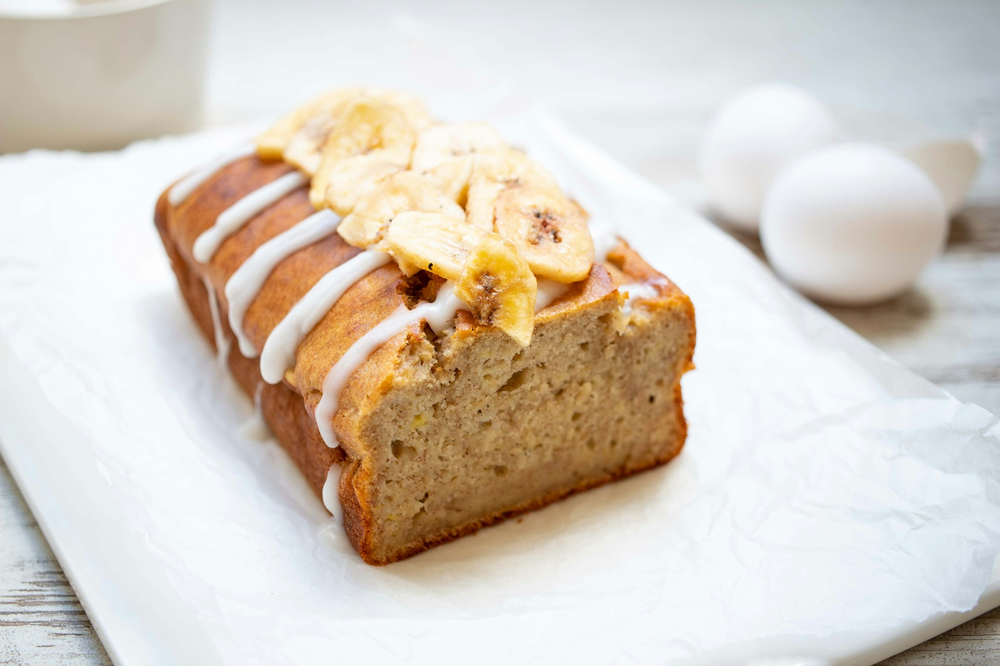

Banana Bread
Home

Description
A classic quick bread characterized by it's moist, tender texture and sweet, banana flavor. It's often enjoyed as a snack or dessert.
Ingredients:
- 3-4 very ripe bananas: The browner, the better for sweetness and flavor.
- 1/2 cup (1stick) melted butter: Adds richness and moisture.
- 3/4 cup granulated sugar: For sweetness.
- 2 large eggs: Binds the ingredients and adds moisture.
- 1 teaspoon vanilla extract: Enhance the flavor.
- 1 1/2 cups all-purpose flour: Provides
- 1 teaspoon baking soda: Helps the bread rise.
- 1/2 teaspoon salt:Enhances the flavors.
- Optional additions: Walnuts, chocolate chips, cinnamon, nutmeg.